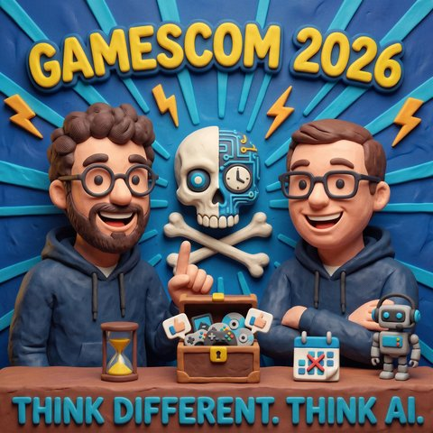

gamescom 2026
Read in EnglishThemen Softwareentwicklung
33 Sekunden zur Folge, bevor du liest.
Worum es geht
Live von der größten Spielemesse der Welt: Was KI in der Spieleentwicklung wirklich macht, und warum niemand damit wirbt
Zum ersten Mal sitzen Mark und Jens nicht in getrennten Räumen vor Riverside, sondern nebeneinander auf der gamescom in Köln. Für Jens ist die Messe ein jährlicher Termin, seit sie nicht mehr in Leipzig stattfindet, und er beschreibt den Wandel von der reinen Spielemesse zur Influencer-Veranstaltung, ohne dabei den Spaß zu verlieren. Sein Lieblingsort bleibt die Indie-Halle: kurze Schlangen, gute Spiele, und Entwickler, mit denen man direkt reden kann. Rundherum ist die Messe größer als sie selbst, mit Ringfest, Congress und der gamescom Dev als eigener Entwicklerkonferenz. 1.700 Aussteller, über 70 Prozent davon aus dem Ausland.
Mark kommt mit seinem Sohn und bringt eine Enttäuschung mit. Am Xbox-Stand läuft ein Gewinnspiel: Wer Spiele testet, sammelt Codes und füllt damit vier Reihen einer Sammelkarte, jede Reihe ein Druck auf den grünen Knopf. Die beiden füllen alle vier, stellen sich zwei Stunden an und erfahren am Ziel, dass nur noch einmal gedrückt werden darf und die gesammelten Punkte am nächsten Tag ungültig sind. Dass alle in der Schlange ein Recht auf ihre Chance haben, versteht er sofort. Was ihn stört, sind Regeln, die während des Spiels geändert werden, bei einem Aussteller, der nicht zum ersten Mal auf dieser Messe steht.
Der inhaltliche Teil beginnt mit einem Fehltritt. In der Indie-Halle spricht Mark einen Entwickler auf KI in der Softwareentwicklung an und erntet einen Blick, den er selbst als Entsetzen beschreibt. Das betreffende Spiel wirbt ausdrücklich mit handgemalten Grafiken. Jens kann die Reaktion gut nachvollziehen: Wer viel Zeit in Handarbeit steckt und sich dann gegen billige Massenware behaupten muss, hat gute Gründe für eine Abgrenzung. Auf den großen Verkaufsplattformen häufen sich Titel, die schnell und ohne Sorgfalt erzeugt wurden, und in dieser Konkurrenz Gehör zu finden, ist für kleine Studios schwer.
Interessant wird es bei der Frage, wie viel KI in Spielen tatsächlich schon steckt. In einem Interview am Rande der Messe erklärt Felix Falk, Geschäftsführer des Branchenverbands game, die Technik sei nichts Neues, die Spieleentwicklung setze sie seit Jahrzehnten ein. Mark hakt nach: Jahrzehnte bedeutet mehr als zehn Jahre, und was genau ist dann gemeint, Codevervollständigung oder ganze Level, die von allein entstehen? Die Frage bleibt offen und ist typisch für die Debatte. Auffällig ist etwas anderes: Auf keinem Stand wirbt jemand mit dem Begriff. Zu einem großen kommenden Titel gab es die Meldung, es sei gar keine KI im Einsatz. Wo Studios offen damit umgehen, folgt derzeit die Quittung in den Bewertungen, und ein Studio hat KI aus der Konzeptionsphase wieder verbannt, nachdem die Kritik zu deutlich wurde.
Dass die Ablehnung nicht die ganze Wahrheit ist, zeigen Zahlen, die Jens in der Folge nennt. Bei den 18- bis 24-Jährigen finden nur wenige Prozent KI-gesteuerte Figuren gut, bei den Älteren ab 45 ist die Bereitschaft deutlich höher. Eine Untersuchung der University of Bristol hat 122 Spielsitzungen mit KI-generierten Figuren ausgewertet, und 95 Prozent der Beteiligten empfanden die Interaktion als spaßiger. Der Schluss daraus liegt nahe: Erlebt wird es gern, beworben nicht.
Der zweite Teil dreht sich um das, was solche Figuren möglich machen würden. Mark, dessen Spielzeit in World of Warcraft in Jahren gemessen wird, stellt sich Begleiter vor, die mit einem auf Abenteuer gehen und sich über Gott und die Welt unterhalten. Im selben Atemzug nennt er die Kehrseite: Wie gefestigt muss jemand sein, dessen virtueller Freund immer online ist und ihm nach dem Mund redet? Jens sieht die Grenze der heutigen Spiele dort, wo man sich abseits des Drehbuchs bewegen will, etwa hinter die Theke eines Sushi-Restaurants in Cyberpunk. Beide erinnern an Experimente, in denen Agenten in offenen Welten losgelassen wurden und eigene Gesellschaften bildeten. Dass so etwas auch ohne KI aus dem Ruder läuft, zeigt ein Zwischenfall aus der Geschichte von World of Warcraft: Eine Seuche aus einem Endkampf wurde über ein Tier in die Städte getragen und tötete dort Spieler und Figuren gleichermaßen, bis die Betreiber eingriffen.
Zum Schluss zwei Gedanken, die über Spiele hinausgehen. Der erste ist eine Warnung vor der Bequemlichkeit: Wer aus einem Prompt dreißig Folien erzeugt und weiterreicht, verlagert Arbeit auf andere, und ein gutes Modell ersetzt keine klare Vorstellung davon, was am Ende herauskommen soll. Mark erzählt von einem Foliensatz mit 38 Folien, von denen 36 Fehler enthielten. Jens ergänzt, wo KI in der Produktion wirklich hilft, etwa wenn ein selbst gedrehtes Video als Bewegungsvorlage fürs Rendering dient, und warum der Wirt am Morgen nicht mehr fröhlich grüßen sollte, wenn man ihm am Vorabend einen erschlagenen Gegner vor die Tür gelegt hat. Der zweite Gedanke ist eine Prognose: In ein bis zwei Jahren, so Marks Vermutung, wird es auf dieser Messe eine eigene Kategorie dafür geben, dass Spiele die Oberfläche für KI liefern. Denn was Spieleentwickler beherrschen, ist genau das, woran andere scheitern: komplexe Sachverhalte grafisch verständlich zu machen, und mehrere Menschen darin gemeinsam handeln zu lassen.
Transkript
00:00:00Hi, heute geht es in unserer Folge um Spiele und wir machen das von der Gamescom, der größten Spielemesse der Welt.
00:00:09Und Mark und ich werden euch ein bisschen berichten darüber, was das bedeutet für die Spieleindustrie, wie sie Spiele entwickeln, was sich durch KI verändert
00:00:17und was das aber auch für uns als Spieler heißt, wenn Studios auch einmal mit KI entwickeln und wenn wir vielleicht auch KI in Games begegnen.
00:00:24Und zusätzlich erfahrt ihr, warum ich am ersten Tag von der Gamescom auch sehr enttäuscht war.
00:00:29sehr enttäuscht war. Bleibt dran!
00:00:59zu mitnehmen. Herzlich willkommen bei Sync Different Sync AI. Wir haben es euch versprochen.
00:01:12Jens und ich haben keine Kosten und Mühen gescheut eine Veranstaltung zu besuchen,
00:01:19die sich seines Zeichens die größte Gaming-Messer OPAUS nennt. Es ist total lustig,
00:01:27weil als ich mit meinem Sohn hierher gefahren bin, habe ich gerade so eine
00:01:33Ticker-Meldung gelesen, so nach dem Motto, die Games kommen, macht den Motto
00:01:37alles erfolgreich, alles wird super sein und alles wird ganz toll sein und darum
00:01:41sind wir nächstes Jahr die ganze Woche da. Also nicht wir in Person, weiß ich, ob wir
00:01:46eine ganze Woche da sind, ob wir sie überhaupt einen Tag nächstes Jahr besuchen, aber die Games kommen wird
00:01:49nächstes Jahr eine ganze Woche irgendwie am Start sein, aber bevor wir uns
00:01:55vielleicht über ein mixes Jahr unterhalten. Jens, schön dich zu sehen, es ist ja doch sehr selten,
00:02:02dass wir uns, ich sag mal, live von der Farbe begegnet, sonst sind wir immer nur in diesen
00:02:06Monitorns an Riverside. Jens, wie findest du es auf der Gamescom? Also ich bin, erst mal hallo,
00:02:13auch von meiner Seite, wie immer muss ich kurz erklären, ich gehe seit Jahren zu Gamescom,
00:02:21Seit dem Gamescom nicht mehr in Leipzig ist und können wir immer hingegangen.
00:02:28Viel Zeit hier verbracht.
00:02:30Auch natürlich mit einem Sohnemann früher.
00:02:34Und dann haben wir hier hingegangen.
00:02:36Alles mögliche mitgenommen, Indie-Games angeguckt.
00:02:39Groß an großen, bei großen Games angestellt.
00:02:42Manchmal geärgert, dass ich kein Ticket mehr bekommen habe.
00:02:45Dann doch eben wie abends dann hingegangen.
00:02:48So ein Nachmittag-Zick, da kann man sich immer noch anstellen, das ist auch ein bisschen leerer.
00:02:51Das wurde dann so so mal ein Muster über die Jahre, dann war auch das Profil ein Runden da gewesen.
00:02:56Den Wandel von nach einem Gaming-Messer zu auch so einer Influencer-Messer mitgenommen.
00:03:02Ja, ich kann mich immer noch über die Messe mehr da, ne?
00:03:04Ich kann mich an dieses allererste Mal erinnern, ja, wo dann irgendwie auch immer so eine Horde von Teenager an mir vorbeigelaufen ist und ich dachte, was ist denn jetzt hier los?
00:03:13Aber halt dann irgendein Influencer, YouTuber, Let's Player, der irgendwo da war und so hat sich diese Messe auch so ein bisschen weiterentwickelt, aber ich muss sagen, wenn du hier durch die Gänge gehst, es ist immer noch beeindruckend, was für Stände da sind, wie groß die sind aus so einer Standbausicht einfach auch interessant.
00:03:34Also wer mal geile Messenstände sehen will, da muss er nochmal zur Gamescom kommen.
00:03:38Und es ist einfach erst nicht, wie viele Leute da sind.
00:03:41Die Lautstärke ist abgefahren.
00:03:43Ich mag es aber immer wieder, wenigstens ein Tag im Jahr mal in die Gamescom einzutauchen und da zu sein.
00:03:50Es ist ein cooles Event, es ist ein geiler Spirit.
00:03:53Ich mag mal mit den Developern reden in der Indie-Ecke, mit dem ein bisschen über das UX von den Games zu reden.
00:03:58Ich mag mal neue Spiele austesten.
00:04:00Manchmal reicht es mir auch, wenn ich einfach nur so ein bisschen treiben lasse,
00:04:04wie die Leute angucke, die da sind, die verrückt wie Cosplayer, die anderen, die da rumlaufen,
00:04:09die sich verkleidet haben für die Games.
00:04:11Das ist einfach eine geile Szene, wo ich mich schon seit,
00:04:15nämlich 5 oder 6 bin zu Hause früh, das ist jetzt schon ein paar Jahre,
00:04:18ich bin von Herzen Gamer und dem entsprechend auch immer von Herzen Gärne auf der Games.
00:04:24Das macht Spaß.
00:04:26Also ich muss ja zugeben, ich bin noch nicht ganz so lange dabei.
00:04:30Ich habe irgendwann mal mit meinem Sohn gesagt, okay, komm, wie wär's, wenn wir zusammen,
00:04:35also wenn du mit mir oder ich mit dir oder wie auch immer, ja, wenn wir die Gamescom besuchen.
00:04:39Und das erste Mal, als wir da waren, hatten wir beim allerersten Mal so Fachbesucher-Zugriff.
00:04:45Und Fachbesucher, also war das Zugriff, die Möcher, wie so ein Fachbesucher das Ding dazu besuchen.
00:04:52Und es ist total lustig gewesen, weil es war so schön leer.
00:04:56Und du guckst ja das andere und du denkst, wo ist denn diese Fülle von der E-Made sprechen?
00:05:01Und es gab auch keine Altersbändchen.
00:05:04Jetzt musst du dazu wissen, mein Sohn, der war damals noch keine 18, der war auch jetzt noch keine 18,
00:05:09wir unterhalten uns nicht über mit welcher Farbe, der da rumgelaufen ist.
00:05:12Aber wir sind da quasi so durch.
00:05:14Er konnte alles machen, vom Tapti, das ist keine Ahnung was.
00:05:17Ein Tag später, normaler Besuch, wir gehen rein genauso fröhlich wie am Vortag.
00:05:23Das war ein Leicht voller.
00:05:25Und auch dreimal meinte jemand, wie alt bist denn du?
00:05:29Mein Sohn, ich weiß es, ne?
00:05:31Vor drei Jahren, dann redet er, 13, 14, ja, irgend sowas.
00:05:34Ja, du brauchst ein Band und das hier darfst du nicht spielen.
00:05:37Aber am Tag vorher war er da noch drin, weißt du?
00:05:40Das war so unsere erste Gamecom-Decum der Motto.
00:05:43Ach guck mal, es gibt solche Tage und solche Tage.
00:05:46Wofalls das am ersten Tag ein Feder war,
00:05:48dann hab ich das auch nicht erwähnt,
00:05:50dann ist das auch gar nicht passiert.
00:05:52Aber das war zum Beispiel so ein Erkenntnis und da hatten wir auch das Thema, dass auf einmal irgendwie so eine Herrscher von Menschen so eine Traube bilden und wehh.
00:06:00Und du denkst so, was da los?
00:06:02Da muss das auch irgendjemand sein, so influencertechnisch, der da durch die Gänge ging.
00:06:07Bevor wir uns über KI unterhalten, es gab hier etwas, das hat mich heute den Tag über echt frustriert.
00:06:15Das würde ich gerne nachher noch erwähnen, aber bevor ich was schlechtes sage, musst du unbedingt was Gutes sagen.
00:06:19fand es cool. Heute, also was fand ich cool? Ich war jetzt auch ein bisschen, also man muss
00:06:28immer sagen, die Gamescom ist mehr als nur die Gamescom, also die Gamescom ist in Köln
00:06:33auch noch mal ganz draußen, noch das Ringfest, wo auch noch sogar ist noch freie Konzerte gibt,
00:06:38wo auch den Ring in den Köln, dann die Straßen gesperrt sind und da noch ein Riesenparty ist
00:06:42mit coolen Bands, die dann haben spielen. Also das ist ein richtiges Festival rund um
00:06:46das Thema, diese Suchkultur Gaming auch, die natürlich auch andere Kulturen unterwegs ist.
00:06:51Da gibt es noch den Gamescom Kongress und auch die Gamescom Dev, die findet Montag,
00:06:58Dienstag statt. Das ist die Begwollepaar-Komparenz von der Gamescom und halt die große Gamescom,
00:07:02die größte Spielemesse der Welt ist, mit all den 1.700 Anstreitern, die da sind,
00:07:07Ich hätte die Zahlen gehört, dass es über 70 Prozent Aussteller aus anderen Wendern sind.
00:07:16Also nicht nur deutsche Hersteller sind da, ist super international.
00:07:19Das finde ich alleine schon beeindruckend, immer wieder das zu sehen.
00:07:23Diese weltverbindende Kultur, das macht mir den Spaß.
00:07:26Und ich selber hatte jetzt wirklich auch eine Führung, die Gamescom gekommen hatte
00:07:30und so ein bisschen hinter die Kulissen auch in den businessen Reichen reingucken könnte.
00:07:34hatte unsere 2-3 Talks angehört, die Marken quasi auch in der Gaming-Szene erfolgreich werden
00:07:43können mit verschiedenen Ansätzen. Das fand ich ganz spannend, diese Business-Seite diesmal stärker
00:07:47zu gekrachten und nicht nur als Gamer da zu sein. Trotzdem habe ich es einfach wieder genossen,
00:07:52über die Markete zu laufen. Ich muss immer wieder sagen, es ist diese Kultur,
00:07:59die mir Spaß macht. Die Freude der Leute zu sehen, auch manchmal bleibe ich auch nicht dann,
00:08:05wenn ich dann an manche Stellen vorbeigehe, weil das mache ich nicht, wenn die Leute
00:08:08sechs Stunden da irgendwie anstehen, um den Spiel zu spielen, das finde ich dann immer noch irgendwie irre,
00:08:12denn das Spiel dann zwei Tage später als Demo dann draußen ist und jetzt unterladen kann,
00:08:16aber sei es darum, jeden das seine. Ich fand diesmal, um zurück zu einer Frage zu kommen,
00:08:26Tatsächlich, ich komme jetzt aber nie auf den Namen, in der Indi-Halle hatte ich mir ein Spiel angeguckt, das fand ich meist, ich finde die Indi-Halle wie immer.
00:08:33Die Indi-Halle ist mein Place-to-V, weil da hast du eine Menge guter Spiele, die man sich gut angucken kann, wo es nicht ewig lange Schlangen gibt, wo man direkt mit den Developer reden kann.
00:08:45Die Frage, wenn es mittlerweile auch in den nächsten fünf Jahren stellen mag, ehrlicherweise, das finde ich immer besser.
00:08:51die auch schneller geworden werden kann, sorry.
00:08:53Also in die Halle hatte ich tatsächlich ein AI-Thema, aber bevor ich da draufgehe, wollte
00:08:58ich einfach sagen, weil ich doch eben eingeleitet habe, was hat dir besonders gefallen, weil
00:09:02mich was besonders geärgert hat.
00:09:03Weißt du, da kommst du heute auf diese Messe, ja?
00:09:07Die Messe macht ja für den normalsterblichen um 10 Uhr auf, du gehst da rein, bist ein
00:09:13bisschen füllig, aber egal, dann gehst du hier an den Stand der Xbox und tut
00:09:20Also die Spiele fand ich total cool, ja?
00:09:23Also das ist ich, ich bin ein alter Halo-Fan, weil ich hatte die erste Xbox mit damals gekauft,
00:09:28als das erste Halo-Spiel rauskam und da gibt es ja Call of Duty und wie der ganze
00:09:34kam, so heiß den sie da gezeigt haben und dann hat der Xbox stand sich so was Schönes
00:09:39einfallen lassen, wie so nach dem Motto, wir haben so ein Queen-Button-Event und
00:09:43wenn du dir so eine Art Sammelkarte voll machst, weil du Spiele spielst und bei jedem
00:09:48Spiel, dass du gespielt hast, ein QR-Code kriegst und wenn du den dann scanst, dann kriegst du Punkte quasi und kannst an vier verschiedenen Reihen Punkte sammeln.
00:09:57A4 Punkte, das heißt also du kannst verschiedene Reihen vollmachen, indem du Spiele spielst und wenn du diese Reihe voll das kannst, du dann für jede Reihe den grünen Knopf drücken, um was zu gewinnen.
00:10:09Da gibt es so Lenkreter und Konsolen, Laniats und lautes Umgraben.
00:10:14Und das hatten sie so ein bisschen gemischt, ja.
00:10:16Das war total toll, weil ich habe mir das dann so ein bisschen angeschaut gehabt,
00:10:20als wir dahin kamen am Stand.
00:10:22Da waren welche, die hatten wie auch immer schon so die ein oder andere Reife
00:10:27mit diesen Punkten voll und haben dann irgendwie Lenkrad abgegriffen
00:10:30und einen Controller und einen Pin und keine Ahnung was.
00:10:33Und dann haben wir uns gerade gesagt, komm, das machen wir auch.
00:10:36Und es ist ja auch ganz schön, du kannst ja ein paar Sachen spielen und dann haben wir
00:10:39halt vom Call of Duty über Halo, über Fable, über Flugsimulator und den ganzen Kram haben
00:10:48wir dann gespielt und dann ist mein Sohn noch über die Messestände gerammt, um die
00:10:53Sponsoren-Codes zu kriegen, die dann auch nochmal eine weitere Reihe mit hier so Spielemarken
00:11:00quasi waren.
00:11:01Ehrlicherweise habe ich die KI gebeten, ob es dir nicht die QR-Codes irgendwie berechnen könnte.
00:11:07Da hat sie gemeint, nein, das geht gar nicht, weil da sind zu viele Unbekannte.
00:11:11Ich weiß zwar, wie das Ding aufgebaut ist, bin mir auch nicht sicher, ob ich es mittlerweile
00:11:16könnte, aber das ist ein anderes Thema.
00:11:17Na ja, wir hatten nicht so ganzen Dinger voll, wir waren stolz wie Bolle, weil wir hatten
00:11:22alle voll.
00:11:23Wir hatten viermal diesen grünen Knopf drücken können, man ahnte es schon, dann
00:11:27hieß es ja nicht.
00:11:28Also stellt euch mal an die Schlange, weil auch hier ist eine Schlange und diese Schlange hat uns dann vorhin noch zwei Stunden grüßt.
00:11:35Dann standen wir also nach dem ganzen Spiel nochmal zwei Stunden da drinnen.
00:11:38Voller Vorfreude, die haben ja immerhin vier Chancen.
00:11:41Und dann kommst du hin und dann kriegst du quasi erklärt, nee, also nachdem die Schlange jetzt so lange ist,
00:11:46muss man sich immer, wenn man das nochmal machen will, nochmal anstellen.
00:11:50Man darf es nur einmal drinnen.
00:11:52Und ach und im Lebenssatz, ich habe hier jetzt auch für die nächsten Tage noch Tickets.
00:11:57Morgen ist das ungültig.
00:11:59Hm, okay, weiß ich.
00:12:01Eben habt ihr noch Leute durchgelassen.
00:12:04Ich verstehe das total, dass Leute, die in der Schlange stehen,
00:12:07dass alle ein Recht haben, versteht mich bitte nicht falsch.
00:12:09Aber ich finde, wenn du dich auf solche Spiele einlässt,
00:12:12dann solltest du auch damit rechnen, dass das ein Erfolg ist.
00:12:14Ich meine, die Xbox ist doch nicht das allererste Mal in ihrem Leben
00:12:17auf der Gamescom und ist überraschlich voll.
00:12:19Und es ist anderthalb.
00:12:21Ich will gar nicht wissen, wie es Freilassams aussieht.
00:12:24Ich bin einmal vorbeigegangen und habe mir nur kurz angeschaut, weil ich mir diese schönen 25-Jahre-Edition von der X-Fox da habe, in den transparenten Grün, die hatte ich mir mal angeguckt.
00:12:38Da wollte ich mir auch die Tastatur vorbestellen.
00:12:41Es ging aber jetzt wieder nur, wenn du amerikaner bist, natürlich auch kannst du es nur noch an der Amerika anrufen, die Tastatur vorbestellt.
00:12:49Aber die finde ich schon ein bisschen gut.
00:12:51Aber ein anderes Thema, aber da hatte ich dann auch gesehen, da waren auch Leute gerade in dieser Gewinnspielschlange
00:12:56und drückten auf den Button und da gewann einer so einen großen, wie heißt das, Lenkrad mit Pedalen.
00:13:02Das ist natürlich irgendwie so Racing Games.
00:13:04Und das ist eine ganz große Bob's gewesen, da dachte ich mir so, alter Schwede, wir haben erst Donnerstag,
00:13:09wir müssen auch ein ganz schönes Lager dabei haben für die ganzen Preise, wenn da ständig solche Sachen rausgehauen werden.
00:13:15Aber anscheinend gab es ja auch kleinere Preise zu gewinnen, die...
00:13:21Ich wollte ein Lineart mit dem, wo mein Sohn hat, knöpfen.
00:13:25Darauf wollte ich hinaus. Ich sehe es hier wieder.
00:13:27Auf einen Controller drauf rücken.
00:13:29Nochmal, alles fair.
00:13:31Ja, alles gut.
00:13:32Als viele anzuschauen und so weiter.
00:13:34Ich fand nur dieses, wir ändern die Spieleregeln während des Spiels quasi.
00:13:40Das fand ich irgendwie so ein bisschen, naja...
00:13:43Und ihr müsst auch verstehen, Mark kriegt das Lenni ja trotzdem mit Stolz jetzt vor mir.
00:13:47Ja, die denen sprechen sogar.
00:13:50Aber es hängt nichts dran.
00:13:51Das ist ja, es hängt nichts dran.
00:13:54Aber gut, okay, jetzt vielleicht zurück,
00:13:57weil nachdem wir jetzt die ersten 30 Minuten über Gamescom und sowas besprochen haben.
00:14:01Zehn Mal noch.
00:14:03Wir können noch gar nicht so viel von den ganzen aktuellen Sachen machen,
00:14:08weil soweit ich das jetzt mitgekriegt habe,
00:14:10mitgekriegt habe, kommt ja von GTA 6 morgen der Trailer auf Netflix raus. Da bin ich auch mal
00:14:16total gespannt, ja auch wenn es irgendwie den einen oder anderen Leaker gibt, der da irgendwie schon
00:14:19Videos voll veröffentlicht hat, aber da sei mal dahingestellt, was für die Indie-Halle erwähnt.
00:14:25Und ich will das als Überleitung zu unserem inhaltlichen Thema nehmen, nämlich,
00:14:28wenn es gewundert nicht wundert, ja, wir heißen ja nicht Game Different, sondern wir heißen
00:14:34sing-different thing AI und so wollen wir auch überlegen, was hat eigentlich AI in der
00:14:40Spiele-Szenerie zu tun. Ich hatte gar nicht so viele Chancen mit echten Menschen zu reden.
00:14:49Ich hatte zwei Möglichkeiten. Das eine war, ich konnte einem Interview lauschen.
00:14:54Das habe ich dann später online gefunden. Damit, weil ich so, okay, wie praktisch.
00:15:00Wenn das wieder so ist, wenn du keine Mikros in so einem Parabel rechtzeitig sahen kannst.
00:15:04Und das Zweite war, ich war im besagten Indie-Halle, nicht weil mich die Indie-Halle so anzieht,
00:15:10sondern weil wir einfach auf der Durchreise waren, quasi.
00:15:14Und da habe ich dann die Chance beim Spiel genutzt und das Thema mal angesprochen.
00:15:19Wie ist das hier mit KI in der Software-Entwicklung?
00:15:21Und da war der Blick des Entsetzens, des blanken Grauens, mir entgegen geschallert,
00:15:27weil ich genau in dem Moment Fett-Napf-Lest-Größen das wohl einzige Spiel in der Indie-Halle
00:15:33gefunden habe, das damit geworben hat, quasi handgemahlte Grafiken zu verwenden.
00:15:39Okay, okay, okay.
00:15:40Wie Riko sagt, ja, das halten Sie eigentlich von Kairentwicklung.
00:15:44Das ist so ungefähr, wie wenn du sagst, was was ich, den Vegetarier fragst, wer das
00:15:48Burgerrestaurant findet.
00:15:49Ja, aber das war trotzdem Kairentwicklung.
00:15:51Also ich meine, wie gesagt, ich finde, das ist ja ein guter Stepper, weil ja
00:15:56Ja, natürlich kann meine Meinung ein Mensch, der sehr, sehr viel Zeit einen so angemalten
00:16:03Thematik reinsetzen kann, durchaus darf auch ein bisschen schlechtere Meinung über billigen
00:16:11KI-Slop haben, der jedenfalls auch mittlerweile, muss man ehrlicherweise auch bei Steam,
00:16:16Steam große Gaming-Plattformen, wo man sich Games quasi kaufen kann, online kaufen
00:16:21kann und dann auf seinem Rechner spielen kann, der ist jetzt auch viel Mr.
00:16:25Da wird auch viel, viel KI-Slock gerade produziert und billig auf dem Markt ist.
00:16:30Und natürlich kann ich Ihnen so ein bisschen verstehen, weißt du, wenn da viel Arbeit reinsteckt
00:16:34und dann in diesem Geschrei von billiger Software-Lösung, die dann sehr, sehr ähnlich ist,
00:16:43dann dir mit deinem handgekäuften Spiel Gehör verschaffen muss, ist dann nicht einfach.
00:16:49Also wenn da Menge KI-Schrot rauskommt, ich red jetzt nicht von dir, was der Scheiß ist.
00:16:54damit ein Menge KI-Schrott trennend ist, wird es auch für die Kleinen natürlich schwierig
00:16:56irgendwie in dieser Kacophonie der billigen Kopie. Das kann mich ja jetzt nur so erst mal
00:17:03beschreiben und wir gehen ja gleich nochmal auf andere Themen ein, wo KI tatsächlich eben auch
00:17:07sehr sehr hilfreich ist für Entwickler als auch für die Spieler meiner Meinung nach. Trotzdem ist
00:17:13das für gerade keine Entwickler wahrscheinlich gar nicht so einig. Wenn wir eben draufsetzen,
00:17:17ich glaube es ist auf der anderen Seite auch total gut, wenn du ein Entwickler bist und
00:17:20gut Ideas und die damit keine Übungen setzen kannst, weil das jetzt zur Frühe nicht machen
00:17:23könnte, aber eben ich kann ihn ein bisschen nachvollziehen, ja, oder nicht nur ein bisschen
00:17:28so nach, ganz schön, sondern ein bisschen anderer Meinung als wir beide vielleicht.
00:17:31Ich finde, das kann man jetzt, was jetzt da kann man schnell falsch verstehen, ich
00:17:37warne schon mal vor, nicht, dass man nachher sagt zu höre, zu hören, man erzählt,
00:17:41das ist so und keine Ahnung was, das sind ja eh, ich sag mal, unsere persönlichen
00:17:45Empfindungen, von denen wir hier auch berichten. Ein Interview, das ich quasi am Rande dann verfolgen konnte, war das Interview mit
00:17:54Felix Falk, Geschäftsführer GameEV, der auf die Frage nach dem Motto, welche Rolle spielt denn KI und so weiter, so was
00:18:02sinngemäß gesagt hat, wie, dass KI tatsächlich nichts Neues sei. Okay, gut, das ist schon mal gut, ja, das ist nicht so, wie hier
00:18:11alles Neuland und so, dann fand ich aber den Satz lustig. Die Spieleentwicklung setzt das schon seit
00:18:17Jahren, Jahrzehnten ein und habe ich mir kurz gefragt, okay reden wir von der gleichen KI. Also reden wir
00:18:22von dem gleichen Tooling, das dir quasi in der Softwareentwicklung beim Coden hilft oder reden
00:18:27wir jetzt davon, dass wir keine Ahnung, Bilder optimieren können? Wovon reden wir? Wenn jemand
00:18:33sagt, wir setzen mehr als ein Jahrzehnten ein, also in meiner Welt, vielleicht habe ich
00:18:37auch wieder falsch gerechnet, so wie ich letztens Bits und Bytes und ich mich da irgendwie auch
00:18:42ständig vertan habe oder mich angelegt habe mit den Lehrer meiner Kinder, wie viel Kilo Bytes
00:18:47sind, ein Megabyte und so weiter. Die Diskussion zwischen 1000 und 1024 haben wir mal eine Folge
00:18:53zu gehabt, wie ich das erwähnt habe. Was versteht? Unter einem Jahrzehnt verstehe ich zehn Jahre
00:18:58und mehrere verstehe ich größer zehn Jahre. Ich weiß jetzt nicht, wie das da so vor
00:19:06größer 10 Jahren in Sachen KI gewesen ist. Ja, ich lasse mich nochmal ein anderes Beispiel
00:19:16rausbringen auch, dass tatsächlich, ich weiß gar nicht genau, welches Spiel es war,
00:19:24aber es wurde auch ein Spiel, die haben jetzt wieder auf der GameTrum jetzt auch gesagt,
00:19:28dass sie tatsächlich KI benutzt haben in der Konzeptionsphase, aber sich jetzt davon
00:19:36Abstand genommen haben, weil es sehr, sehr viele negative Bewertungen dazu gibt.
00:19:41Also die Spielerzene an sich ist da auch sehr gespalten, was das Thema betrifft und reagiert
00:19:48momentan noch sehr harsch mit dem Portemonnaie, schrittstrich auch mit den Reviews aufstehen.
00:19:53Da sind also Spiele, die extrem viele schlechte Bewertungen momentan bekommen, wenn die Entwickler
00:20:00offen damit umgehen, dass sie KI nutzen.
00:20:03Okay.
00:20:04Da ist auch so eine, ja, ich glaube, da ist noch keine homogene Meinung zu dem Thema momentan
00:20:11drin.
00:20:12Und zur Zeit ist die Spielerzähne, also ich glaube, die ist nicht durchgängig, da habe
00:20:17ich eine sehr heterogene Betrachtungsweile, die dann sagen, manche finden das nicht
00:20:23gut und ich lese mir gerade so ein paar Videos gerade nochmal auf Steam durch, da ist tatsächlich
00:20:29hier, ich kann ja mal eine vorlesen, die endet dann einfach Storyline, was a bit confusing,
00:20:35hard to read, aggress, und am Ende seid er not a fan of games that use AI.
00:20:40Ja, das ist im Prinzip noch so ein Thema, dass man da, ich glaube es ist auch etwas
00:20:47mit Unverständnis zu tun, ich mag, wir haben uns gerade schon mal so ein bisschen
00:20:50unterhalten, bevor wir in die Sendung gestartet sind. Wo ist heute dann auch nicht KI drin,
00:20:56tatsächlich mehr. Bei vielen Sachen, ob du jetzt der Boot shopper bist und da irgendwelche
00:21:00Sachen zu nutzen, auch Algorithmen drin, die Sachen verbessern. Jedes von jedem Influencer,
00:21:06der untertitelt, benutzt in seinen Videos auf YouTube, um mehr Reichweite zu erreichen
00:21:12oder irgendetwas anderes. Da ist alles mit KI dabei gemacht.
00:21:16kleinen Studios, ich meine allein die, was die für ein Potenzial haben, wo ihm
00:21:20vielleicht Geld oder Zugang zu Talenten fehlt, wo man sich da eventuell auch
00:21:24behelfen kann. Ich frage mich halt bei der ganzen Sache, wenn man das
00:21:29betrachtet, das eine ist die KI, die dir hilft, die Lüften zu bauen, wo du
00:21:34gewahrläufst mit AIS-Lob, das andere ist, wo du vielleicht ein NPC hast, der
00:21:39mit Hilfe von KI ein ganz anderes Verhalten darlegt. Wenn ich mir so
00:21:42überlege, ich war ja, das habe ich auch gleich schon irgendwann getrobt, ein echter
00:21:48World of Warcraft-Suchti, weil meine Playtime im Spiel wurde schon in Jahren gemessen,
00:21:55also genau genommen über ein Jahr, also Zeit im Spiel selbst. Und wenn du mir
00:22:01damals gesagt hättest, dass du da vielleicht, okay ich will es jetzt auch
00:22:06nicht wieder übertreiben, aber sinngemäß virtuelle Freunde findest,
00:22:09weil irgendwelche NPCs mit KI gesteuert was weiß ich selbst auf, auf Abenteuer gehen und
00:22:14dich begleiten und du dich mit dir über Gott in die Welt unterhalten kannst, weil sie einerseits
00:22:19vielleicht Zugriff auf Internet und Wissen und Weltgeschehen haben, sich mit KI mit
00:22:23dir unterhalten können und irgendwann vielleicht sogar lernen, der mag, alter Hexenmeister
00:22:29Name ist Programm, hatte nie einen anderen Charakter, Grüße gehen am Püren, der hat
00:22:33gesagt ein wahres Ich drückt sich in einem ersten Charakter von World of Warcraft aus.
00:22:39Er war ein Angstpader, aber das ist ein anderes Thema. Wie faszinierend das gewesen wäre,
00:22:46wenn das gut gemacht ist und eben kein AI-Slop. Auf der anderen Seite, wenn du dann wieder
00:22:52da stehst und sagst, wie mental gefestigt bist du, dass wenn du dort nicht nur auf
00:22:59man menschliche Charaktere trifft, die einen virtuellen Charakter durch eine virtuelle Welt schüren,
00:23:04sondern auf einen, der ist immer online, wenn du da bist, der redet dir quasi nach dem Mund,
00:23:09der gefällt dir, ja, das Ganze, was so ein Chatchi-Bit hier und so weiter auch machen würde,
00:23:13nur halt in Form von so einem Charakter. Das wird bestimmt auch noch spannend. Total.
00:23:21Das ist das Thema dort. Viel mehr Platz haben, die Leute noch stärker in ihrem Band ziehen.
00:23:26Natürlich, also wenn jetzt das nicht so passionierende Welten, egal ob das jetzt in so
00:23:31kleinen Dimensionen sind oder den großen Welten, wo du wegkriegst und 3D quasi durch die
00:23:35Ehen laufen kannst, ob das jetzt dann...
00:23:37Wir leben in einer Matrix, ach nee, was anderes.
00:23:39Nee, nee, ja so, man sitzt jetzt zweit im Inseln auf dem Ultra, es muss jetzt nicht
00:23:42in einer Firewelt sein oder sowas, aber das ist auch so so, was ist das hier wie
00:23:47Neuromancer?
00:23:48Also Shadow One heißt das Jahr, ne?
00:23:49Nein, Shadow One heißt Audic, Cyberpunk meine ich natürlich gerade.
00:23:52Läuft auch meine Mac mit 80 Frames in Maximum?
00:23:56Ja, ich nutze ja immer zum Gaming meistens die gestimmten Sachen.
00:24:02Im Video-Tiefhaus, wo ich sage, ich bin unabhängig von der Hardware.
00:24:06Auch eine schnelle Internetverbindung.
00:24:08Das ist mein Way to play.
00:24:11Aber zurück natürlich ist es auch in solchen Situationen.
00:24:15Es ist ja momentan absurd, wenn du dich als Spieler
00:24:19Spieler abseits des Skriptes verhält, obwohl die Welten schon relativ offen sind und schon
00:24:25gut darauf reagieren.
00:24:26Wir ist aber nie momentan hinter die Theke des Cyberpunk Sushi Restaurants hüpfen können
00:24:36und einfach mitmachen, weiter Sushi zu verkaufen und dem zu überzeugen, dass du da jetzt Sushi
00:24:40verkaufen möchtest und damit Geld machen kannst.
00:24:43Also es sind im Prinzip noch, also ich sehe das ja total positiv, da kann KI dann was passieren,
00:24:49weil es ja dann wirklich sagt, du lässt so eine Welt dann weg zum Leben erwecken in dem
00:24:52Moment, da kann man gleich auch mal darauf eingehen, wo das teilweise schon gemacht wird
00:24:55und dann noch eine ganze Gesellschaft wieder weg werden, aber ich sehe da eine gigantische
00:24:59Chance in dem Thema, wenn du da NPCs einbaust, die VIP gestützt sind, mit Guardrails,
00:25:06mit natürlich auch Sicherheitsvorkehrungen, das im Prinzip dann auch geguckt wird,
00:25:10wer sitzt dann hinterher vor den Spielen, welche Altersklasse ist das, wie weit
00:25:12kann ich dann gehen, auch in der Freiheit dieser NPCs. Das muss natürlich dann beobachtet werden
00:25:17und auch acht werden. Aber natürlich ist das geiler, als wenn das so forkerskriptete Sachen sind,
00:25:22die dann einfach nur ... also diese Gespräche, die langweilen. Also ich habe viele Spiele,
00:25:27wo ich jetzt sage, durch auch die Kommunikation, die wir mit Chatshipity und Co. haben,
00:25:33ich spiele mich nicht mehr machen. Weißt du, das sind einfach so diese, ich mag nicht mehr
00:25:38mehr diese Klickstrecken, diese vorgefertigten Dialoge mit irgendwem führen. Ich würde schon
00:25:42ganz gerne eigentlich dann auch mal ein bisschen abseits des Fahrers Gespräche führen. Also
00:25:48ich rede jetzt mal von meinem Spiel, was ich gerne ausspiele. Das hier, das Kindemkamen.
00:25:54Ich kann es nicht aussprechen. Ich würde uns zwei oder sowas nach.
00:25:57Kennst du mein Motto, wer es besitzt oder bezahlt?
00:26:01Ja, das heißt.
00:26:02Wie gesagt, ist eine supergeile Mittelalter, die eine der besten Mittelalter-Simulationsspielchen
00:26:07Läufsa rum und ganz geile Schlachten schlagen, alles Mögliche machen den Spiel, ist es
00:26:12super offen schon das Spiel, super gut. Ich höre auch gerne der Storyline zu und verfolge
00:26:18da auch gerne den den Zweck, den ich dann verfolgen soll, den Entwickler so ganz
00:26:22grob gelegt haben, damit ich in der Story insgesamt weiter komme, das ist alles
00:26:25stein, aber die Dialose zwischendurch ist abgleichend zwischendurch, wenn das
00:26:30im Prinzip noch noch viel freier wäre und da kann KI, glaube ich, helfen,
00:26:34Das war ja schon vor einigen Wochen und Monaten, wenn nicht sogar über einem Jahr, wo sie auf
00:26:45eine World of Warcraft Server quasi KI losgelassen haben und das Ding dann auf einmal anfingen,
00:26:53nach dem Motto so eine Art Gesellschaft zu gründen. Dann macht den Job, der andere macht
00:26:59hier den, den, den, den, den, den Bad Bows im Gemäß, ja, wo man sich dann auch denkt,
00:27:03wie krass ist das, wenn du jetzt wieder aus der klassischen Spiederentwicklungsszene kommst,
00:27:08da gehst du dann ja in ein Spiel online. Das bei Werther Vorkraft wieder als Beispiel,
00:27:12da gab es ja auch einen echten Tag Nachtrhythmus, der an die echte Uhrzeit gekoppelt war.
00:27:16Und, aber wenn du dich ausgelockt hast, haben halt nur die Spieder weitergespielt,
00:27:21die Welt hat sich nicht geähnt, ja? Du bist halt in den Dungeon gegangen, weil
00:27:25Menschen da waren. Und mit KI könnte sich ja rein theoretisch die ganze Welt ändern.
00:27:30Was ist denn so?
00:27:31Eine Katedrale und eine Bachdiesel und eine Macht das und eine Macht jenes.
00:27:35Passiert dann halt...
00:27:36Also Mark, kann natürlich passieren, du kommst aus dem Dungeon wieder hoch
00:27:39und die ganze Welt ohne es vernichtet.
00:27:41Ja, dann gehe ich halt schnell wieder in den Dungeon.
00:27:43Wobei das hatten wir auch ohne KI, ja.
00:27:45Ich weiß nicht mehr, wie der Dungeon hieß,
00:27:49wo quasi eine Seuche beim Endboss
00:27:52Da sich quasi korruptes Blut nannte sich das, glaub ich.
00:27:58Ja, ja, ja.
00:27:59Da hat ein Jäger sein Tier eingepackt,
00:28:01ist zurück nach einem Vorortstehleportiert.
00:28:03Das ist ein Tier rausgeholt, das Tier war noch versäugt,
00:28:06da war vor allem die Spieler vorbereitet.
00:28:09Es hat sich eine Art Corona ausgebreitet, wo in den ganzen Städten
00:28:13sind alle verreckt, inklusive der Wachen und der NPCs.
00:28:18Das ist doch super. War das vorgesehen von dem Entwickler?
00:28:21Nein, das war überhaupt nicht vorgesehen, die mussten ja tatsächlich das System so weit ich weiß zurücksetzen,
00:28:25weil dann gab es auch solche Geschichten wie Heiler sind in die Städte und wollten Heilen, andere sind sich in irgendwelche Dörfer zurückgezogen, um nicht zu sterben.
00:28:33Interessant.
00:28:34Da haben die das da irgendwie zurückgesetzt und das sind halt auch das so Dinge, ich habe damals viel mehr damit beschäftigt, wie kann ich aus der Welt rausspringen und Level reinspringen, die ist noch nicht gehn.
00:28:44Aber dann lass uns da doch mal extra Folge zu machen zu solchen Themen, das war da nochmal
00:28:53wirklich die KI-Möglichkeiten auch in so einem Games und was können wir dann nochmal machen.
00:28:58Also das ist für mich auch ein heißes Thema, da kann man gerne nochmal weitere Folge zu
00:29:01machen.
00:29:02Aber ich will noch einmal zu dem Thema zurückgehen, weil wir haben das glaube ich auch
00:29:06in einer anderen Folge schon mal erwähnt, meine ich, das simulieren von, das simulieren
00:29:12mit KI-Agenten ins Spiel. Da war ich schon relativ früh seit ich vor ein, zwei Jahren auch die ersten
00:29:19Experimente von, ich glaube, das war Robert Jung hieß, der war mal MIT-Professor, der hat sich
00:29:25dann selbstständig gemacht und hat im Prinzip so ein Messer für Neuroscience meinig und der
00:29:29hat im Prinzip ein Firma gegründet, die in Minecraft dann auch unter anderem so KI-Agenten,
00:29:36die zu verfügen stellen, glaube ich, dann ist eigentlich richtig Ende, die man dann auch
00:29:39nutzten kann, wie man sich erzünden kann. Aber die haben unter anderem auch Experimente gemacht, wie
00:29:43tausend KI-Agenten dann in so einer Minecraft-Welt losgelassen und da bildet sich auch tatsächlich so
00:29:50ist ja auch an die Religion und sowas korruptet. Das ist halt irgendwie abgefahren. Also ich finde,
00:29:57ja, das ist, das würde aus meiner Perspektive die Spielewelt und die Spieleerfahrung,
00:30:06die man da erleben kann, um das Sichfache noch mal potenzieren in der Erfahrung,
00:30:13die man da machen kann. Das wird wahrscheinlich schwierig werden, so was zu orchestrieren,
00:30:17wenn du dann eigentlich noch einen Plan hattest für deine Spielwelt, die der Spiel erfolgen
00:30:22sollte, wenn diese Welt dann komplett einfach deine eigene Gesellschaft gründet und einen
00:30:26ganz anderen Plan verfolgt, aber es ist schon irgendwie abgefahren und spannend.
00:30:29Aber das macht die Sachen natürlich umgeheuer spannend, wenn du dann, ich sag mal,
00:30:32dem Böse, wie ich diese Fähigkeiten in die Hand drückst, wirklich in dieser virtuellen Welt
00:30:39eigenständig zu hier. Ja, und vielleicht kann ich Ihnen dann doch mal überzeugen, dass
00:30:45Gewalt nicht die Lösung ist. Also stell dir vor, du bist in so einem alten Diabolo-Hackens
00:30:49Slay und so, und würdest dann irgendwie den Weg nah sagen, so, haste was. Beim Danzen-Kiefer.
00:30:53Ja, beim Danzen-Kiefer. Gehst kurz noch mal zum Fürsten der Dunkelheit und sagst,
00:30:57hier hast du mal Obacht, lass uns reden, ja. Wenn man sagt so, hier gibt mir das
00:31:02Ich brauche das napame Rezept, ich bin die alte Chemie-Professorin, ich brauche das napame Rezept, weil ich es einfach vergessen habe, oder was?
00:31:08Dann kannst du ja mit den Rücken KI-Hacks dann vielleicht dann auch im Game dann,
00:31:13Sondern Reitenfreischeitel oder halt den Danzen-Tippen davon überzeugen lassen.
00:31:18Ja, lieber eine friedliche Welt aufbaut, und dann wird auch einmal aus deinem Hack and Slay-Game,
00:31:23wird auch einmal ein Farm-Simulator Teil 38.
00:31:27Das fand ich aufspannend, wie groß dieser Farm-Simulator stand hier ist.
00:31:31Aber während wir so gesprochen haben, fiel mir noch ein anderes Thema ein.
00:31:34Du findest hier extrem viel, die Wörter PC, Handheld, Xbox, Playstation, Max eigentlich nur,
00:31:46wenn ich mal notebook aufmache, aber das ist ein anderes Thema.
00:31:48Darauf wollte ich gar nicht raus.
00:31:50Aber du findest hier ein Begriff nicht mehr als Werbung, Aushängeschild, Qualitätsurteil
00:31:57oder als, wir nennen diesen Begriff, damit sich alle um uns scharen,
00:32:02weil wenn du irgendwie Aufmerksamkeit erreichen willst, dann sagst du, ah, das ist KI.
00:32:06Und das hast du ja gar nicht.
00:32:08Also ich finde, es ist ein Schill, wo steht, bei uns sind, also wir arbeiten mit oder wir haben durchermöglicht.
00:32:16Ja, aber unabhängig davon, was man da so der KI versteht, hat mich KI jetzt gefegt und es soll sich entwickeln.
00:32:21Ich habe irgendwo letzten Berichten lesen, dass bei diesem GTA 6, wie erwähnt, ein Trailer kommt bald,
00:32:26Dass er kein K.I. im Einsatz wäre, jetzt kannst du sagen, gut, okay, das Ding ist schon lange in der Entwicklung.
00:32:31Das sind wir wieder bei diesen Jahrzehnten, also die vorhin aus dem Interview kamen,
00:32:35da nutzten sie halt K.I. in der Social-Entwicklung.
00:32:38Wo ich dann aufhörte und sage, okay gut, was heißt das K.I., oder du ja auch,
00:32:42wir hatten es im Vorgespräch, ist jetzt hier Kotvervollständigung schon ein großer Einsatz von K.I.
00:32:47oder ist K.I., wenn man sagt, nee, ganze Level sind alleine entstanden.
00:32:51Ab welcher Stelle ist es denn KI, aber ich fand die Meldung ganz krass und nochmal, es steht halt wirklich nirgends an.
00:32:58Dass du nicht hier fragst, passiert nichts damit uns und es wird in dem Sinn.
00:33:03Es ist nicht marketing oder gar nichts.
00:33:05Ja, weil, genau, weil natürlich, aber das ist ja, was wir gerade als Thema hatten.
00:33:10Auch so ein bisschen der Punkt da ist, dass die Spieler Szene und auch manche Influencer da noch relativ kritisch sind in dem Thema
00:33:19und sich dann in der Ehre verletzt, warum auch immer, fühlen, dass sich da im Prinzip dann tatsächlich ein wenig
00:33:26Impulierung breit macht und schnell breit macht und dass das auch immer, wie ich schon gesagt habe, in der Geldförde auslässt.
00:33:33Na, dass die Leute dann irgendwelche Games, die offen damit werben, nicht gekaufen.
00:33:38Ich habe ein paar Zahlen meint dazu. Aber das ist nicht ganz richtig.
00:33:41Ich war ja so ein bisschen, aber auch recht zumindest gepuckt, also auf der Gamescom selber.
00:33:44Ach so, ich hatte einen tollen Blick. Entschuldigung, mein Film.
00:33:46Nein, nein, alles gut.
00:33:47Das war ja nur Xbox-Spielen.
00:33:48Genau, du hast natürlich auf der, es gab diesmal ein extra Track, auf der, da war ich
00:33:53jetzt nicht, hatte das eine Konferenzprogramm angeguckt, auf der Gamescom Developer-Konferenz,
00:33:58gab es natürlich einen VI-Track dazu, wo wir auch tauchst am Ende des Themas sind,
00:34:01das können wir ja selber von unserem Lungsing-IT-Messen, wo man dort unterwegs ist, dass das Thema
00:34:06da einfach nicht an vorbeigeht und natürlich auch in dem Bereich des Advertisings,
00:34:11da sieht man riesiges Potenzial natürlich mit dem Thema Hyper-Personalisierung
00:34:16von Werbung innerhalb von Spielen, sehr personalisierte Ansprache von Gamer, da ist ja mannig Geld in den Themen drin.
00:34:27Also jetzt glaube ich irgendwie alleine in Deutschland, machst irgendwie 9,4 Milliarden Euro mit der Umsatz mit Spielen.
00:34:34Wenn man sich zahlen in dem Moment, aber wenn man da so den chronischen Zahlen glaubt, dann ist da einfach viel cool zu machen.
00:34:41natürlich genauso KI an jeglicher Stelle eingesetzt, dass dann für die Werbemaßnahmen sind und
00:34:46sehr personellisierte Werbung aufzuschalten für die Games. Also ich glaube, auch wenn KI
00:34:51nicht überall in der Gaming Szene draufsteckt, es ist wahrscheinlich trotzdem an sehr, sehr vielen
00:34:56Stellen einfach drin. Und ich glaube, dieses Romans nicht so, als wir stellen das im Vordergrund,
00:35:02vermarktet, ist halt wirklich das Thema, dass man auch den Mythos des Spiegelmacher
00:35:10Spiegelmacher, der in seinem kleinen Indie-Studio sitzt und jede Kurzseile selber schreibt und
00:35:16mit Liebe quasi diese Spiele-Design vielleicht auch bewusst von dem einen oder anderen nach oben.
00:35:21Ich glaube, ich will jetzt auch den Game-Developern, wie wir das für mich zu lange in der Szene kennen,
00:35:27auch viele von Gesprächen und mal reingeguckt, was so Spiele entwickeln machen.
00:35:33Da ist auch viel Handarbeit noch drin. Da ist ja auch viel Zeichen ins Kribbeln von Zähnen,
00:35:38sich die Story überlegen und so was. Da ist viel drin, aber da wird wahrscheinlich auch
00:35:41sehr, sehr viel mit KI Unterstützung, was wir mal so mal haben, sagen, gemacht werden.
00:35:45Und auf der anderen Seite ist das Thema, das die, das die, mit mir gerade das Thema NPCs
00:35:51zum Beispiel, da ist halt einfach auch noch so ein, wir beide sind enttysastisch, manche
00:35:57Zahlen sagen halt, ja, 99% der Spieler wünschen sich solche Inhalte, aber da sind dann
00:36:02auch irgendwie so Hersteller, die solche Software verkaufen, die das ermöglicht.
00:36:05Das macht dir deine eigene Statistik, andere sind von der Games-Developer-Konferenz,
00:36:13meine ich auch irgendwo mal zahlen.
00:36:15Ich habe eigentlich auch das noch aufgeschrieben, dass zum Beispiel gerade bei den Jüngeren,
00:36:19also bei den 18- bis 24-Jährigen, die sehen das nicht so positiv, dass KI genutzt wird
00:36:25in Games.
00:36:26Während die, die man so glaube, über 7% finden, dass es gut, dass es KI-Generäte
00:36:30im STS gibt's den älteren Jahrgängen, so ab 45 oder so, so alter Fast. Da bin ich schon
00:36:40lang darüber. Ja, ich auch. Da ist das schon eher anders, da ist dann wie fast. Ja, ich
00:36:46weiß, ich wollte uns nicht mehr machen, als wir sind, sorry. Da ist es tatsächlich so,
00:36:49dass die, glaube ich, über 22 Prozent schon mal die Bereitschaft zu sagen, ich hatte
00:36:53Bock auf die bestützte NPCs. Da ist, glaube ich, auch, wie gesagt, noch nicht so
00:36:59Homo-Woines fällt in der ganzen Gaming-Zähne, dass wir jetzt über die Jahre wandeln, aber
00:37:03noch ist es nicht on-vogue, da das Schild nach vorne zu packen und sagen, ich habe hier
00:37:09ein komplett KI entwickelt, das Game und alle Charakteren, die dann sind, sind mit
00:37:14KI's, LMMs bestückt, die können komplett interaktiv mit euch handeln, also Spiel
00:37:20dieses A-Assisted Games von KI gemacht mit KI-Agenten darin, das zieht nicht bei
00:37:27jeder Zielgruppe.
00:37:28Ich habe gerade die Fantasie in meinem Vorpf gehabt.
00:37:31Du hast vielleicht schon mal gehört, wie da bei Minecraft, da hat jemand mal ein Computer
00:37:35in Minecraft gebaut.
00:37:36Und, wenn ich mir jetzt über die Geräte gelte immer vor, ja, was weiß ich, du spielst
00:37:41ja als World of Orcas, oder irgendwas, und da wären jetzt so lauter NPCs, die mit
00:37:47KI betrieben werden.
00:37:49Und du würdest diesen berühmten, so berühmte Prom-Tax nehmen, dass du das Ding dazu
00:37:53bringst, seine Guardrails zu verlassen.
00:37:56könntest du ja dann auf einmal ganze Herrschaden von Bevölkerung, du wärst quasi so Level 1 Bauer,
00:38:01aber hättest irgendwie durch den Prom-Tech irgendwie halb Azzerott auf deiner Seite.
00:38:05Auch sehr lustig, auch sehr lustig. Ja, nee, also von der Seite, ich weiß nicht, wenn man das
00:38:13jetzt so ein bisschen wieb passieren lässt, würde ich sagen, würde bei mir jetzt erst mal
00:38:18hängen bleiben, erstens mal, wie du auch schon sagtest, es ist aktuell nicht so
00:38:23zum Mittewürbst, einfach um Shitstorm zu vermeiden.
00:38:26Was am Umkehrschluss auch wieder heißt.
00:38:29Ich glaub schon, dass das genutzt wird.
00:38:32Ja.
00:38:33Aber es ist halt mehr so ...
00:38:35Psch, genau.
00:38:36Ja, so wie bei der Sesam-Frage, ja.
00:38:39Willst du eine AI kaufen? AI? Ja, genau.
00:38:41Ja, ja, ich weiß, was du meinst.
00:38:44Lass mich eine Sache noch an den Punkt erneuern,
00:38:47das ist mir nämlich auch gerade noch in die Finger gefallen.
00:38:50Wir machen ja mal so leifende Scheiße.
00:38:52Nein, nur eine Zahl. Und zwar ist es dann nochmal spannend. Es gibt von der University of Bristol
00:38:59in der Studie, die hat so 122 Spiele-Sessions ausgewertet, wo eben KI-Generite NPCs benutzt
00:39:05worden sind anscheinend. Und da ist dann wirklich so, dass 95 Prozent diese Interaktion dann
00:39:11einfach wirklich als mehr Spaßwagen noch mal an der Spiegel. Also wenn du im Prinzip
00:39:15das nicht in die Werbung stellst, sondern das echte Erlebnis dann hast, dann
00:39:20Ich finde, die Spieler das auch geil.
00:39:22Ich glaube, das wird eine Phase sein,
00:39:24damit man den Vorteil auch da sehen, wie man ihn an anderer Stelle sieht.
00:39:27Also, ein gesunden Umgang mit KI wird auch in der Gaming-Zene.
00:39:31Auch akzeptiert werden von den Spielerschaften auch.
00:39:34Oder jetzt auch hier, wenn du sagst, okay, du verwendest jetzt KI nicht für Spiele,
00:39:39sondern für ganz Klassische wie Powerpoints oder Folgen.
00:39:44KI befähigt Menschen, hey, ich habe einen tollen Prom geschrieben,
00:39:48Daraus sind 30 Seiten Powerpoint geworden. Ich schick das mal an den Kollegen und frag fünf Minuten später, wo blätten deine Entscheidung?
00:39:55Ich habe dir das so eine tolle Powerpoint geschickt. Da war doch alles drin, was du brauchst.
00:39:59Das mag ja selbst wenn es fachlich gut ist.
00:40:02Und keine Halluzinationen hat, muss ich auch gleich noch ganz kurz noch was zum besten geben zum Thema Halluzination in Folien.
00:40:09Es ist einfach übertrieben und du verlagerst ja damit Arbeit an Menschen.
00:40:15Du hast ein Problem geschrieben, hast viel Material erzeugt,
00:40:18selbst wenn das, wie gesagt, sehr gut ist.
00:40:20Verursuchst du an einer anderen Stelle auch Arbeit,
00:40:23weil es muss ja vielleicht jemand lesen oder von der KI zusammenfassen.
00:40:26Oder irgendwas.
00:40:27Also jemand muss auch wieder eine Aktion machen.
00:40:30Es ist so, wie wenn du heute eine Einmessage oder eine Slack-Nachricht schreibst,
00:40:34mit dem Moment, wo du sendest, gehst ja schon mittlerweile davon aus.
00:40:38Du hast doch auch sofort gelesen, warum antwortest du mir nicht.
00:40:41Wenn solche Erwartungshaltung gestehen,
00:40:43gestehen, glaube ich, hat das einen negativen Charme. Und das Zweite ist, nur weil du halt
00:40:48mit, egal wie viel Aufwand, anderes Material erzeugen kannst, heißt das ja noch lange
00:40:53nicht, dass es qualitativ gut ist. Ja, also nur weil ich sage, ich mache mit, korrekt,
00:40:57hier in NPC oder sonst was heißt nicht, dass es gut ist. Ich hatte letztens so ein Gespräch
00:41:02gehabt, wo jemand zu mir meinte, das ist nach dem Motto, ja nur mit Opus, kannst
00:41:05du geiles Fondue machen und blah, blah, blah, kriegst du den Fondensatz und dann
00:41:09mit deinem Sonnet nach. Einfach so aus Prinzip, nach dem Motor fassen wir mal zusammen und so nett so,
00:41:16ja hier 38 Folien auf 36 sind nur Fehler. Also von der Seite auch ein gutes Modell heißt nach
00:41:23lagen denn nicht, dass du es gut bedienst. Gut bedienen heißt nach lagen, dass ein gutes Ergebnis
00:41:27rauskommt, weil du kannst ja auch nicht sagen, mach hübsch. So wie große gehen an Georg,
00:41:32ein sehr von mir geschätzter Designer. Wenn ich jemand gesagt habe, mach mal hübsch,
00:41:37hat er ist mir fast in die Kehle gesproben, was ist denn hübsch für mich?
00:41:41Ja, wenn kannst du es halt z.B. auch sagen, mach hübsch und sagst, oh, hast du recht,
00:41:44sieht nicht gut aus, oder sieht immer was, wenn er fertig ist.
00:41:47Und ich glaube, das ist so ein bisschen die Mischung zwischen die einen sollten akzeptieren
00:41:51oder müssen lernen quasi, dass KI nicht schlecht ist, wenn du ein Spiel damit spielst.
00:41:55Es kann trotzdem gut sein, aber das hängt halt maßgeblich von denen ab, die KI
00:41:59einsetzen, getreu den Motto von René, ja, Intent, was möchte ich haben,
00:42:05Die KI baut was, und du prüfst nach, was dann daraus ankurzt.
00:42:09Jens, möchtest du was ergänzen?
00:42:12Ich würde noch ergänzen wollen, dass wir natürlich auch auf der Seite der Workflows,
00:42:20wie dann Spiele entwickelt werden, wie man KI einsetzt.
00:42:24Da sind ja auch noch viele Möglichkeiten.
00:42:26Gucken wir auch immer wieder die Themen an, was so in der 3D-Rendring-Bereich und so was passiert,
00:42:31passiert, Videogenerierungsbereich passiert, dann habe ich jetzt vorhin auch einen schönen
00:42:34Artikel gesehen, wo jemand gerade genau erforscht, wie im Prinzip mit KII Hilfe Workflows in der
00:42:41Videoehrzeugung dann einfach übersetzen werden. Dass man eben nicht hingeht und sagt, ich mache
00:42:45mal einen Pond und mache hübsch und mache mir das tollste Video, mit dem ich in Oscarpreis
00:42:49gewinne, sondern wo im Prinzip dann vielleicht durch dadurch, dass ich einfach nur schon mal in
00:42:54so einem Raum ekte, mit irgendwelchen Paletten, die ich weggeschleppe oder irgendwas anderes,
00:42:58Das ist ein schönes Video gesehen. Daraus dann quasi eine Vorlage für das Rendering-Macher.
00:43:03Also, dass ich dann sage, nimm dieses Video und benutze es als Bewegungsvorlage, um daraus
00:43:09dann aus dem Paletten dann halt von mir aus Eisblöcke zu machen, die ich irgendwo erhochebe
00:43:14oder Feuerblöcke, die es dann irgendwie sind.
00:43:17So, das heißt, was auch immer es ist, also auch da wird gerade geforscht, dass
00:43:22man eben sagen kann, das Ergebnis ist dann doch wieder präziser menschlich kreativ.
00:43:27Also an Schattenhauer einfach den Prompt machen wir eine tolle PowerPoint, machen wir das beste Spiel der Welt oder machen wir halt einen 5 Minuten Film.
00:43:36Wenn die Fähigkeit und Workforce gebaut werden, wo ich dann eben präzise auch eingreifen kann, als der Kreative dann im Hintergrund der etwas Neues erschaffen möchte,
00:43:47dann wird dann auch wieder da etwas Besseres heraus.
00:43:50Weil ich dann einfach, genau wie ich dann vielleicht nicht mehr in Photoshop jedes A, jedes Haar früher einzeln freistellen musste.
00:43:57Wenn ich da ein Bios habe, konnte ich jetzt dann irgendwann den Magic Radierer benutzen, um den Hintergrund wegzukriegen.
00:44:02So werde ich jetzt natürlich auch in Zukunft in einem 3D-Rendering, wenn ich einen Film mache,
00:44:07vielleicht sehr, sehr einfach in der Szene die Kamerafahrt nochmal ändern können, mal die dann gerendert worden ist, nochmal ein paar Sachen anpassen können.
00:44:13oder eben auch im Spiel vielleicht dann die Cut-Szene, der erst mal vorspielen können,
00:44:19selber zu Hause bei mir im Garten, und dann wird die Cut-Szene quasi 3D-Geränder von der KI,
00:44:23die dann ein schönes midget-heavy-Setting ausmacht, oder ich simuliere vielleicht auch erst mal mit KI,
00:44:31wie sich diese Gaming-Welt entwickelt aus den NPCs, die vielleicht KI's sind und den hunderten anderen Spieler,
00:44:37um vielleicht auch negative Strömungen zu vermeiden, die dann in dem Spiel passieren können.
00:44:42was nicht, aber dann, da wird noch viel auch in der Gaming-Zene an sich an Tools entwickeln,
00:44:48die hinterher, ah natürlich, vielleicht die Produktion an ein oder anderen Stelle einfacher
00:44:55machen, aber ehrlicherweise auch zu einem wieder höheren Produktivitätsschub und Kreativitätsschub
00:45:04auch bringen wird. Also werden, glaube ich, natürlich wird es, wie es Bücher gibt,
00:45:09noch massig wie das Filme, wie Musik natürlich jetzt im Prinzip so mit dem
00:45:14Schrott quasi übersehen wird, wo viel Slogan drin ist, wo vieles Gleiches
00:45:18drin ist, aber viele Sachen werden auch einfach durch KI besser werden und
00:45:22noch kreativere Ergebnisse produziert werden. Wir haben das gerade mit den
00:45:26NPCs gehabt, viele immersivere Gespräche werden einfach möglich sein in den
00:45:31Spielen, weil halt nicht alles vorgesehen ist, weil sich vieles
00:45:35anpassen kann und weil dann halt gleich der Tavernen wird, wenn ich
00:45:38dann am Abend vorher den Ork direkt vor seiner Tavernentür den Kopf abgeschlagen habe und
00:45:44die Blut geschmiert ist, wird er mich am nächsten Morgen halt nicht mit. Hallo, Kramm, der Eisenbahre hat.
00:45:50Das ist aber toll, dass du mir gestern die Distanze blutet vor die Tür gekippt hast.
00:45:56Da ist ja vieles...
00:45:58Ja, ja, es sind ja so ein U18-Portrast, das ist doch schon anders.
00:46:03Ja, aber das heißt, ich glaube, da wird vieles entstehen, was dann auch vielleicht die anfängliche Skepsis gegenüber dem Thema auch überlösen wird.
00:46:13Und vor allem deutlich kreativere Ergebnisse noch produzieren wird, weil es einfach geht.
00:46:20Weil eben nicht nur ein paar das machen können, so wie wir das auch in der IT-Landschaft sehen,
00:46:26wir müssen programmieren sehen, dass eben dieses Thema ja mehr Leute können drauf zugreifen.
00:46:32Ja, es ist immer noch schlau, wenn ich mich mit dem Metier auskenne.
00:46:37Also wenn ich ein Booter-Regisseur bin, wenn ich ein Booter-3D-Artist bin,
00:46:42wenn ich ein Booter-Programmierer bin, dann werde ich durch VI noch besser.
00:46:44Wenn ich davon keine Ahnung habe, kann ich was produzieren, was beim nächsten
00:46:5050. Geburtstag von Schwiegermutter oder wem auch immer ein gutes Ergebnis liefern wird.
00:46:55Wäre ich damit reich oder einen Oscar gewinnen?
00:46:58Nee, wahrscheinlich nicht.
00:46:59Aber alle werden dir an diesem Geburtstag sagen,
00:47:01was für einen Naturtalent du solltest unbedingt zu den Oscars, das sind die
00:47:06selben, die gesagt krieg man du singst ja Gottes gleich, hast eine Engelstimme
00:47:11um dann bei Deutschland so schön zu was da ein anderes Feedback zu kriegen.
00:47:15Genau ich möchte zum Schluss eine Prognose geben.
00:47:19Ich möchte mich auch eine Prognose festlegen, ich weiß aber noch nicht ob
00:47:22ich sage die Prognose ist für nächstes Jahr oder für über nächstes Jahr, aber
00:47:26ich möchte eine Prognose für den nächsten ein zwei Jahre abgeben.
00:47:30Ich glaube, wir werden auf der Gamescom die Kategorie, dass Spieler ein Interface für AI sind, sehen.
00:47:40Weil, wenn ich mir anschaue, wie professionell diese Oberflächen da so werden, die man so teilweise aufgetan,
00:47:47sie kann ich mir nicht vorstellen, dass die großen Spieler, Entwickler dieser Welt nicht da auch irgendwann mal vielleicht sagen,
00:47:53sagen vielleicht nicht auf der xbox weiß ich nicht vielleicht doch doch oder
00:47:56playstation bitte an dieser stelle alles eintragen also wir machen hier keine
00:48:00werbung aber ich könnte mir gut vorstellen dass diese fähigkeit und
00:48:05dieses wissen wie präsentiere ich menschen komplexe sachverhalt in einem
00:48:11grafischen universum wo mehrere irgendwie und auch noch die menschen
00:48:15kollaborativ das wird dort ein blick zu kriegen ich vermute aber dass
00:48:23diese Prognose, die es sicherlich zum Nachdenken und zur Diskussion anregen würde und ich
00:48:29würde aber trotzdem sagen, aufgrund der späten Stunde, dass wir sagen, wir nehmen das als
00:48:35Teaser, so wie wir gesagt haben, wir wollen auch mal irgendwie so eine Hardware-Bastelfolge
00:48:38machen und was man so A.I. und so weiter alles machen kann und uns wieder ins Getümmel
00:48:42stürzen, Jens, schön dich getroffen zu haben, schön, dass ihr zugehört haben
00:48:48habe, ja, ich schon wieder raus aus der deutsche Sprache, Entschuldigung, habe.
00:48:52Ich würde sagen, wenn es euch gefallen hat, den Rest ein Like, empfehlt uns weiter, Kommentare
00:48:59in dem Podcast Player eurer Wahl sind gerne willkommen, auch ein bisschen Feedback über
00:49:04unsere neue Landingpage über unseren WhatsApp-Kanal, den ich unten in den Schaumnoten für
00:49:10Linke würden wir uns natürlich freuen und von der Seite, ich weiß nicht, ob
00:49:16So ein hier Halt und Beinbruch und Petri Heil und so was in der Spiele Szene gibt, aber
00:49:20in dieser Stelle, falls ihr was wisst, stellt euch vor, dass wir das sagen würden, lasst
00:49:25die Spiele beginnen.
00:49:26Bis zunächst.
00:49:27Ciao.
00:49:28Bis zum nächsten Mal.
00:49:29Viel Spaß in eurer auf der Gamescom-Mark.
00:49:32Ciao.
00:49:33Ciao.
00:49:36Willkommen bei Think Different. Think AI., dem Podcast von Mark und Jens.
00:49:42Zwei technologieverliebte Köpfe, die nicht nur über künstliche Intelligenz
00:49:46sondern sie lebt. Hier gibt es klare Einordnungen, echte Praxiseinblicke und einen frischen Blick auf das, was möglich ist.
00:49:54Verständlich, kritisch und immer mit einem Auge zwingt.
00:49:58KI zum Nachdenken, zum Schmunzeln und vor allem zum Mitreden.